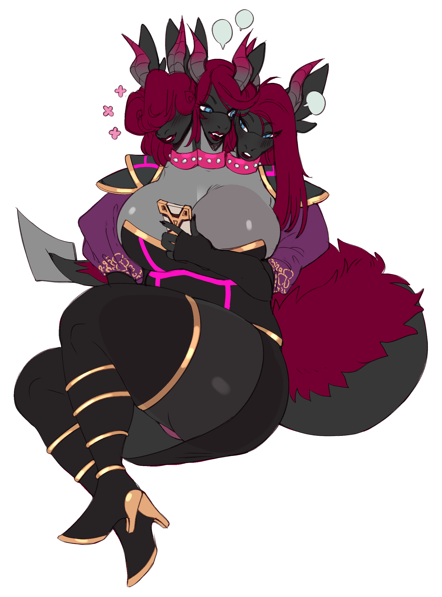

Zoe’s Bio
Empress Zoe Crosse⌗
| Catergories | Details |
|---|---|
| Nicknames | Zo-Zo, Crimson Empress |
| Species | Dragon (Ancient Earth/Fire Dragon mix |
| Age | Adult (~27 physically, 1000+ actually) |
| Gender | Trans-Female |
| Pronouns | She/Her & They/Them |
| Sexuality | AroAce |
| DOB | 30th june |
| Marital Status | Single |
| Place of Birth | ??? |
| Residence | Draco Syndicate Base, New Draconya |
| Key abilities | Antimatter manipulation, Conditional Immortality, Elemental Control, Mind control |
About:⌗
Zoe Crosse, The leader and the key figure head of the Draco Syndicate, is a large and intimidating dragon of unknown age, origin and limit to her power. While she is fully capable of going to toe to toe with stellar entities and even some demi-gods, she mostly uses her powers to rule over the Draco Syndicate, a massive villainous network that spans over several different star systems
Appearance:⌗
Zoe is usually represented as a large, plus-sized black dragon, with shadings of dark grey for her wing membranes, her stomach, the under side of her tail and neck and in her large finned ears. Her head and her tail is adorned with a long, vibrant lipstick red hair, usually kept long and messy. Her body is also adorned with a pair of large wings, and a long and thick tail with a spiked end. On occasion, she takes on variations of her look, such as having three heads, a more snake-like lower body as opposed to her normal legs, and even at one point possessing a wolf-like body for a short time, however these forms are usually short live.
Her usual, non-combative attire consists of a large black and red ball gown, with segmented sections on the main dress part of the gown, adorned with spikes, as well as a pair of black shoes with red soles and small spikes on the heel. Alongside this outfit, she also wears a pair of black bracelets and a black collar, adorned with spikes. While this dress is not used for combat, the gown’s segments are actually made of a symbiotic material, that one close to a chosen target can extend out to capture an unsuspecting person. Her combat attire, while similar in design, features a base-line underlayer bodysuit that is similar in design to those worn by her drones, albeit adorned with the red and black that Zoe uses on a lot of her outfits, as well as lacking any form of explicit control devices e.g. Control collars, Control bracelets, Control insertion toys, as well as the visor being crimson red instead of the typical light rose colour that the normal drones have.
Character:⌗
Zoe herself is quite the character; when she is in the presence of those other than her closest allies, she has a veneer of authority and power, with a bit of sass and spite thrown in for good measure. She is one that is know to strike fear into the hearts of weaker willed beings with just words. However, when she is around her closest allies, she allows herself to drop the veneer, revealing someone who genuinely cares about those who are close to her, as well as revealing a softer, kinder side that also resonates when she is around children and animals.
Abilities & Techniques:⌗
Abilities:⌗
Due to a combination of factors, from the fact of being a dragon, and due to experimentations done on her by not only those who have captured her but by herself, Zoe has a wide array of different abilities at her disposal. The following is a list of notable powers and abilities that Zoe has at her disposal;
- **Enhanced Physical Condition: ** Due to experimentation to her body, as well as decades of training, Zoe has perfected her body to a state where not only can she reach the limits of her body, but has surpassed them; From her physique, to her mental fortitude to even her reflexes have been fine tuned to far exceed that normally seen of a dragon. However, this physical state is nothing without the control and restraint to manage it, to which Zoe is very much capable of, being able to reduce her strength so that she doesn’t break people’s bodies from a single touch.
- **Enhanced Mental Fortitude: ** While
Gear & Weapons:⌗
Weapons:⌗
Draco Sentinel Hammer:⌗
A large warhammer, forged out of pure draconic steel and augmented with similar nanites to those that comprise Zoe’s bodysuit, the Draco Sentinel hammer is a powerful warhammer that can deal large concussive blasts upon striking the ground, and can easily cover a target in drone goo with a single swing.
Gear:⌗
Z-Crosse / Ancient Draconic Nano-symbiotic Battle Bodysuit:⌗
Originally an ancient battle bodysuit, used by the ancient dragons when piloting their gestalt armors, the Nano-Symbiotic Battle Bodysuit is a hybrid of ancient dragon technology, being augmented with Zoe’s modern technology into a hyper-advanced battlesuit that is sleek and moveable as the ancient battlesuits, with the adaptability and technical abilities from present nanosuits. The suit itself is capable of further augmenting Zoe’s natural abilities, enhancing her punches and her reflexes, as well as being able to patch wounds due to in-built medical stimulant injectors built into the nanites that comprise the suit. The suit also comes with retractable mask, with a full heads-up display for relaying information to Zoe in an instant, as well as a filtration mask that can block out toxins and even allow Zoe to breath in space with the usage of a rebreather. The suit, due to being comprised of nanites, is also able to shift into many different shapes, allowing for different configurations in an instant, such as manifesting back and feet thrusters to allow Zoe to fly at mach speeds, powerful arm blades to slash at opponents, or even an arm-mounted railgun for long ranged attacks.
The original Ancient Draconic suit, which forms as the basis for this suit, had some of the features mentioned, namely the medical injectors and the helmet, however these were in a more rudimentary form. The main shape of the bodysuit, as well as the general material appearance of the bodysuit, is what inspired the look of the battle bodysuit that Zoe wears, and from this battlesuit came the base design for the Drones suits that all Z-Crosse Empire drones wear.
Relationships⌗
Allies:⌗
Commander Opal (Clover Nightstripe):⌗
Commander Opal, Also known by her real name of Clover Nightstripe, is one of the oldest and one of the highest ranked members of the Z-Crosse empire, even when compared to the other commanders. Commander Opal takes the form of a small feline girl, usually wearing a small ball gown-style dress, but in reality is far older, but is stuck in the younger body due to her old body being destroyed. Commander opal is the leader of the Opal divison, which has control over most of the drones. Clover is one of Zoe’s oldest friends, being one of the original researchers that studied Zoe, before becoming a member of the Z-Crosse Empire
Commander Onyx (Milo Stoneclaw):⌗
Commander Onyx, also known as Milo stoneclaw, is the second highest ranking member of the Z-crosse empire; Before joining the empire, Milo was a empovrished man, who had been shunned from his society due to his homosexuality. Zoe met milo when she first started her faction, and helped raise the man from squalor and into a life worth living. And, while she does not condone him doing such a thing, Milo has sworn his life to protect Zoe, to pay her back for saving him from squalor and bigotry. In trade, Commander Onxy controls the Onxy Sentinels, a division made of mostly sentinel-class drones and worker-class drones.
Commander Cinnabar⌗
Commander Sapphire⌗
Commander Jade⌗
Commander Obsidian⌗
Commander Apatite:⌗
Reference Images⌗
STILL IN DEVELOPMENT<
Gallery⌗
STILL IN DEVELOPMENT<